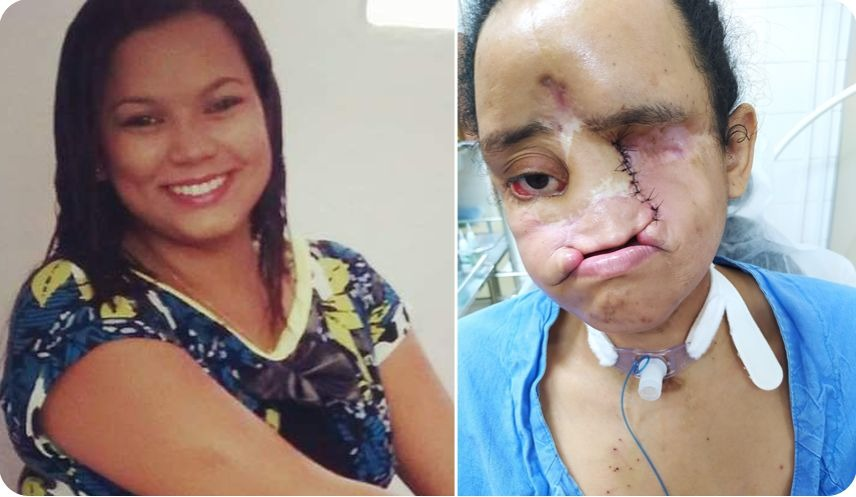

💙 Vaquinha para tratamento da Talita, que perdeu nariz, lábio e olho para câncer agressivo no rosto. 💙
 117 corações recebidos ❤️
117 corações recebidos ❤️
Vaquinha criada em: 03/05/2025 ✅ História Verificada Uma vida mudada para sempre por um câncer agressivo no rosto aos 22 anos e recém-casada.💔
Oi, eu sou a Talita. Foi o que aconteceu com a Talita Ribeiro, de Pinheiro, no interior do Maranhão. Já são dez anos lutando incansavelmente contra a doença. Nesse período, ela teve quatro recidivas, fez mais de 30 cirurgias para a retirada de tumores – a primeira durou impressionantes 14 horas! –, além de perder o nariz, o lábio superior e o olho esquerdo. Talita usa uma prótese para cobrir as áreas do rosto afetadas pelo câncer."Eu lembro que fiquei um mês internada com o rosto aberto, apenas com o curativo mesmo. Os médicos não sabiam o que fazer.”.
Mas o que realmente define Talita não são essas perdas, e sim a forma como ela escolheu reagir a tudo isso. Ela é um verdadeiro exemplo de resiliência para todos nós! Talita seguiu em frente, mesmo diante de desafios que a maioria de nós nem consegue imaginar. "Meu rosto nunca mais vai voltar ao normal, mas não vou ficar me martirizando com isso. Eu uso duas próteses, Traqueostomia… São sequelas que a doença deixou. Mas eu estou em casa lavando minha louça, varrendo minha casa, cuidando dos meus filhos, ajudando meu marido."
"Se a gente olhar só para o problema, a gente vai esquecer as soluções e se afundar ainda mais em um buraco sem fim. Eu tento não olhar só para o meu problema, mas viver com aquilo que eu tenho.”Por que Talita precisa da nossa ajuda? Talita precisa viajar para o Rio de Janeiro a cada quatro meses para exames e acompanhamento no Instituto Nacional do Câncer (INCA). E caso precise de atendimento médico urgente, ela tem que correr para São Luís, a capital do estado. Além disso, as próteses faciais precisam de manutenção constante.
Cada ajuda, cada doação, cada compartilhamento da minha história é um passo a mais para que eu continue enfrentando essa jornada com alegria e com saúde..
" Hoje, para arcar com essas despesas, Talita faz rifas, mas o valor arrecadado nunca é suficiente. Sua aposentadoria por invalidez também está longe de cobrir todos esses gastos."
Você pode ser instrumento de caridade e mudança na minha vida. Para onde vai sua doação: Viagens para exames, consultas, tratamentos e atendimentos emergenciais no Rio de Janeiro e em São Luís. Manutenção das próteses faciais. Medicação e insumos que não são fornecidos pelo SUS.
Já pensei em desistir… A tristeza e a ansiedade têm sido companheiras constantes.
Se não puder doar, compartilhe com o maior número de pessoas possível. A sua ajuda pode ser o que vai chegar a alguém que pode transformar essa história.
É por isso que hoje estamos aqui, abrindo o nosso coração e pedindo sua ajuda com toda humildade: nos ajude a dar dignidade, conforto e esperança para a Talita. Qualquer valor, qualquer apoio, qualquer gesto de solidariedade pode fazer toda a diferença. Você pode ser parte da transformação na vida de uma mulher que sonha apenas em viver sem dor, realizar os sonhos e viver feliz.
Eu acredito que Deus já começou um milagre na minha vida. E sei que Ele usa pessoas de bom coração para continuar escrevendo essa história.

É a mesma tecnologia usada por cirurgiões pra operar à distância, adaptada para devolver a independência .
Ela não AGUENTA MAIS SOFRER, nem comer ela consegue normalmente, para tudo precisa de detalhes Se você está lendo isso agora, eu te peço com o coração aberto: nos ajude. Assista nosso vídeo. Veja com seus próprios olhos quem é a Talita, quem somos nós. E se puder doar qualquer valor, saiba que estará ajudando a mudar nossa realidade e a continuar lutando juntos — com dignidade, com carinho, com esperança. Você pode ser a diferença entre a dor e o lívio. Entre o desespero e a esperança.
Você receberá:
● Atualizações semanais da nossa jornada
● Vídeo do primeiro abraço dEla com a prótese
● Seu nome na nossa lista de anjos (se desejar)
Compartilhe nossa história. Cada compartilhamento é uma nova chance de devolver a felicidade.
Que Deus abençoe você e a sua família.
Att: Talita.